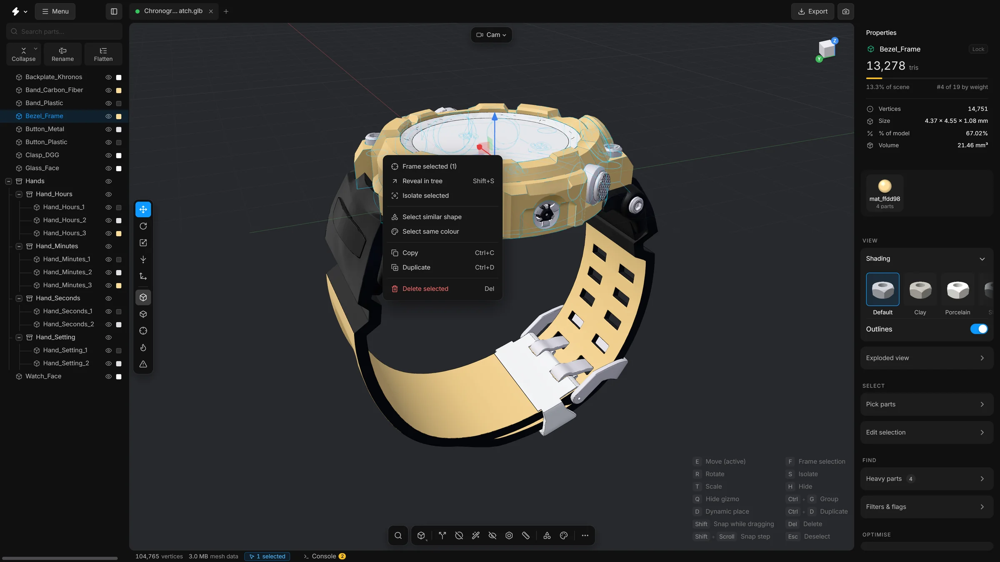

Select parts
Click, add with Shift, toggle with Ctrl, drag a box, or let the app select by shape, colour or name.
Most tools work on the parts you have selected. A selected part gets an outline in the viewport and its row is highlighted in the parts tree.
In the viewport
- Click
- Select one part. The tree scrolls to its row.
- ShiftClick
- Add a part to the selection
- CtrlClick
- Add a part, or take it out if it was selected
- CtrlDrag
- Box select: draw a rectangle around parts
- CtrlShiftDrag
- Box select and add to what is already selected
- Esc
- Select nothing. A click on empty space does the same.
In the parts tree
- Click
- Select one part. Click a group to select every part inside it.
- CtrlClick
- Add or remove one row
- ShiftClick
- Select every row between the last one you clicked and this one
Let the app select
The card Selection & actions in the right sidebar has buttons for the common cases:
- All
- Selects every visible part. CtrlA.
- Invert
- Selects what was not selected, and the other way round. CtrlI.
- Clear
- Selects nothing. Esc.
- Select similar
- Adds every part that has the same shape as the selection. Select one bolt, press it, and all the bolts like it are selected.
- By colour
- Selects every part that shares a colour with the selection.
- By name
- Asks for a pattern and selects every part whose name matches it. Typing
screwselects every part with screw in its name, in capitals or not. The pattern is a regular expression, a compact way to describe text, so some characters such as.and*have a special meaning.
Two tools select for you in a cleverer way: Select hidden parts and the size threshold of Delete small parts.
Find what you selected
- Press ShiftS to scroll the tree to the selected part and open the groups it is in.
- Press F to frame the selection in the viewport.
- The status bar shows how many parts are selected. Click that number to frame them.
- Properties shows the triangle count of the selection and its share of the scene.
The right-click menu
Right-click a part, in the viewport or in the tree, for a menu of things to do with the selection: frame it, isolate it, select similar parts, copy, duplicate or delete.

